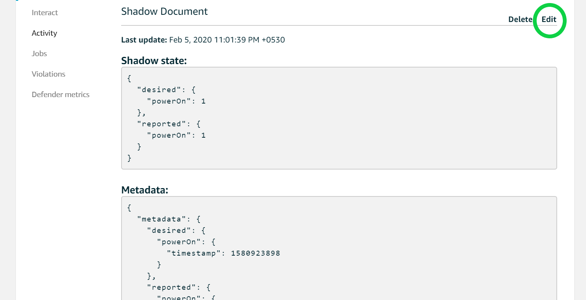
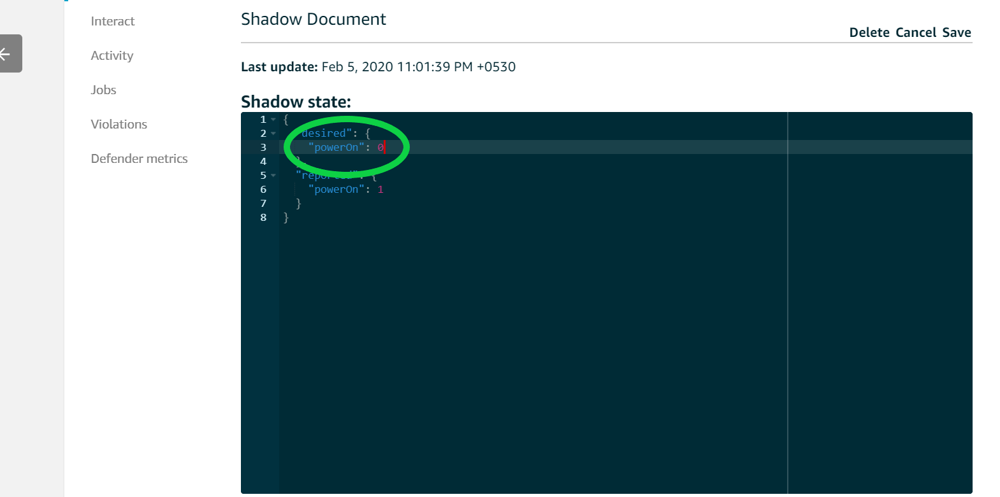

Building and Running on SAM E54 Xplained Pro Evaluation Kit + WINC3400
Downloading and building the application
To clone or download this application from Github,go to the main page of this repository and then click Clone button to clone this repo or download as zip file. This content can also be download using content manager by following these instructions
Path of the application within the repository is apps/led_shadow_client_ecc/
To build the application, refer to the following table and open the project using its IDE.
LED Shadow Client Demo Application
| Project Name | Description |
|---|---|
| firmware/sam_e54_xpro_winc3400.X | MPLABX Project for SAM E54 Xplained Pro Evaluation Kit |
Provisoning the device for AWS account access.
- Refer to Getting Started guide for setting up the AWS account based on your hardware configuration.
- With the completion of the above steps, the user would have got aws_clientcredential.h and aws_clientcredentialkeys.h, this may be used for running the demos.
Setting up SAM E54 Xplained Pro Evaluation Kit
- Connect the Debug USB port on the board to the computer using a micro USB cable
- Connect the ATECC608A Trust on the mikroBUS Xplained Pro adapter in EXT2.
- Connect the IO1 Xplained Pro in EXT3.
- Connect the WINC3400 Xplained Pro in EXT1
Building the Application
- Open the application project firmware/sam_e54_xpro_winc3400.X in the IDE
- Use the aws_clientcredential.h and aws_clientcredentialkeys.h obtained from provisoning the device to aws account.
- Build and program the application using the IDE
Running the Application
- Ensure Wifi router is connected to internet before turning on the board.
- If above step is successful then the LED0 on IO1 Xplained would turn ON/OFF once.
- Open the Terminal application (Ex.:Tera Term) on the computer
- Configure the serial port settings as follows:
- Baud : 115200
- Data : 8 Bits
- Parity : None
- Stop : 1 Bit
- Flow Control : None
- Login to your AWS amazon account From the Services menu (upper left), click (or search for) IoT Core and open it. This will open the Aws IoT page as shown below.

- From the menu on the left, Click “Manage” and then Click “Things”. This will display all the things managed by your AWS account in the right pane. In the right pane, click the “Things” item, which represents your device.

- The THING Name and Shadow ARN are masked for security reasons. Click on the “Shadow” item in the right pane. This will display the device shadow page.
- Build and Program the application using the MPLAB X IDE. The device will toggle one LED and now a shadow document will be created in the Device’s Shadow page. The Shadow state document is JSON formatted file representing the device’s state, in this example the LED status is depicated as device’s status.
- The JSON variable “powerOn” indicates the LED state of the board and Shadow state depicts the current state of the device. 
- The user can modify the Shadow state till the connection is alive by click on the Edit button in the Shadow Document and changing the “powerOn” state. 
- Change the power On value to ‘1’ and click on the Save Button, this will turn LED on the EXT3, Changing the value to 0 will turn LED off.